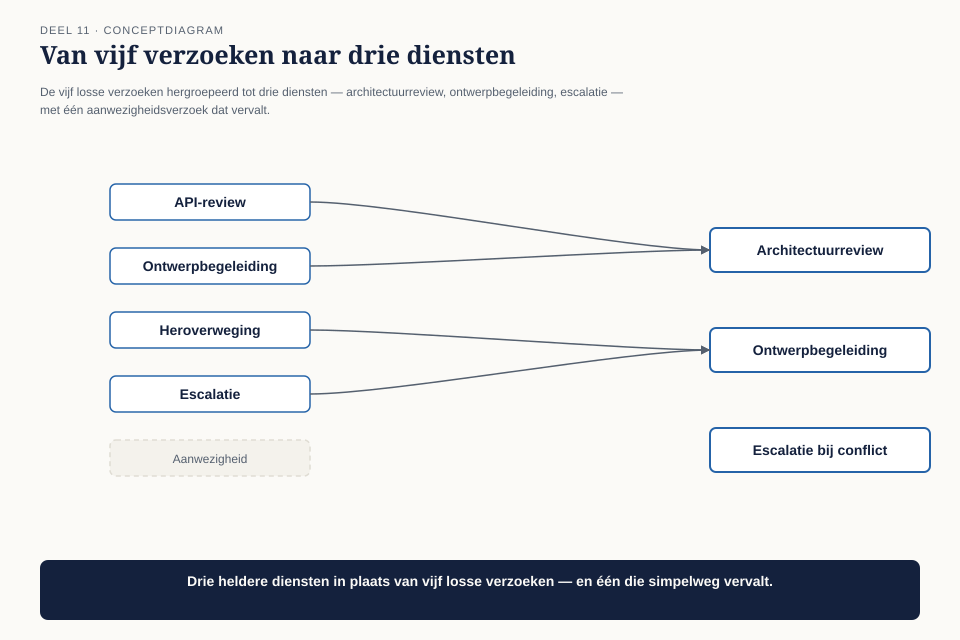
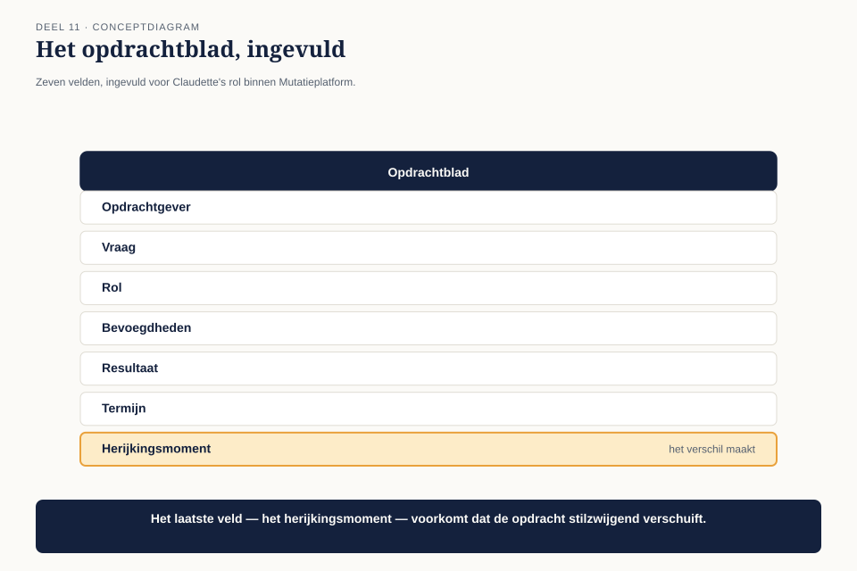
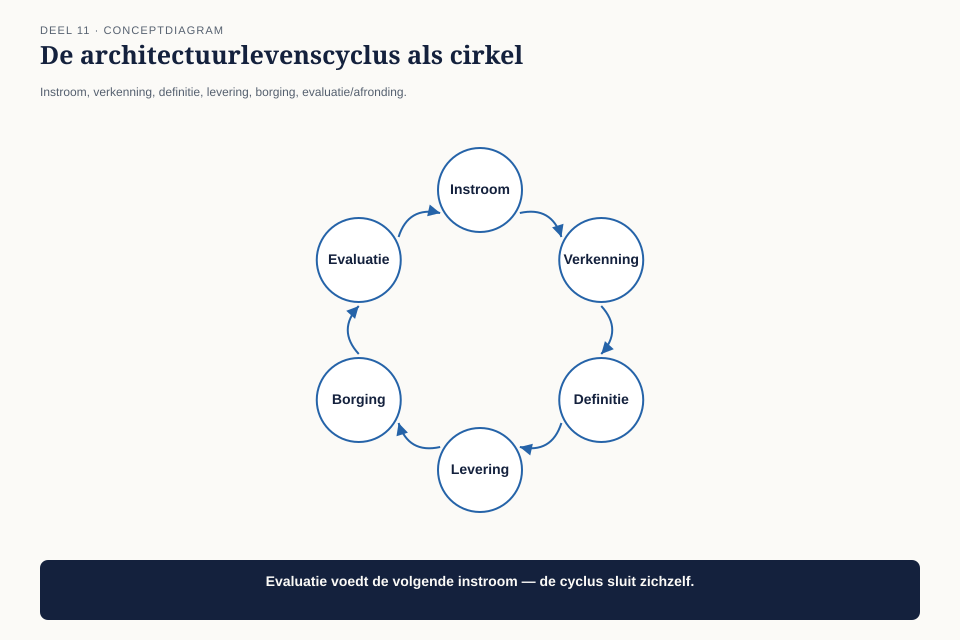

Deel 11 — Het engagement model
Slidedeck · Ductus-cursus BTABoK · Niveau 2 · deel 11 van 30 · 28 slides
Slide 1 — Titel: Het engagement model
Deel 11 — start van niveau 2
Ductus
Slide 2 — Statement: Niveau 1: wat een architect moet kunnen
Niveau 2: hoe je dat aanbiedt als dienst
Slide 3 — Agenda: Vandaag
- “Sluit je gewoon aan”
- Een dienst is geen taak
- Het opdrachtblad
- De architectuurlevenscyclus
- Het gesprek met de programmadirecteur
Slide 4 — Sectie: Nieuwe casusfase
Slide 5 — Bullets: Anderhalf jaar later
- Meridiaan start transformatieprogramma Mutatieplatform ↗
- Drie architecten nu, niet meer alleen Claudette
- Ze wordt gevraagd zich aan te sluiten
Slide 6 — Sectie: 1. "Sluit je gewoon aan"
Slide 7 — Citaat: Jij bent onze architectuurexpert, dus waar nodig schuif je aan.
Jij bent onze architectuurexpert, dus waar nodig schuif je aan.
— de programmadirecteur
Slide 8 — Figuur: Twee weken, vijf teams

Slide 9 — Statement: Zestig uur per week
Geen idee of ze iets heeft bijgedragen
Slide 10 — Sectie: 2. Een dienst is geen taak
Slide 11 — Statement: Een dienst heeft een omschreven vorm
Een taak niet
Slide 12 — Figuur: Vijf verzoeken, hergroepeerd

Slide 13 — Tabel: Van taak naar dienst
| Taak | Dienst |
|---|---|
| “Review deze API” | Architectuurreview, 2 werkdagen |
| “Ontwerp het datamodel” | Ontwerpbegeleiding, apart traject |
| “Beslecht dit conflict” | Technische escalatie, vastgelegd besluit |
| “Wees er gewoon bij” | Geen dienst — geweigerd |
Slide 14 — Opdracht: Opdracht 1 — Taak of dienst
15 minuten, individueel
Acht verzoeken · dienst, taak-tot-hergroeperen, of aanwezigheidsverzoek?
Slide 15 — Sectie: 3. Het opdrachtblad
Slide 16 — Figuur: Zeven velden

Slide 17 — Tabel: De kern
| Veld | Bij Claudette |
|---|---|
| Type dienst | 3 afgebakende diensten, geen “bouw” |
| Wel mandaat | niets — adviseert, team beslist |
| Exitcriteria | bij oplevering, of eerder bij herziening |
Slide 18 — Statement: Zonder exitmoment wordt tijdelijk stilzwijgend permanent
Net als bij het besluitenlogboek uit deel 7
Slide 19 — Opdracht: Opdracht 2 — Je eigen opdrachtblad
25 minuten, individueel
Zeven velden · welk veld kon je niet invullen zonder aannames?
Slide 20 — Sectie: 4. De architectuurlevenscyclus
Slide 21 — Figuur: Zes fasen

Slide 22 — Bullets: Claudette's probleem, opnieuw bekeken
- Instroom: ja
- Verkenning: overgeslagen
- Definitie: overgeslagen
- Direct de leveringsfase in — vijf losse taken, geen opdrachtblad
Slide 23 — Opdracht: Opdracht 3 — In welke fase zitten we?
20 minuten, tweetallen
Vier situaties · welke fase ontbreekt, wat is het risico?
Slide 24 — Sectie: 5. Het gesprek
Slide 25 — Citaat: Zonder afgebakende diensten: 60 uur per week, geen meetbaar effect. Met drie die
Zonder afgebakende diensten: 60 uur per week, geen meetbaar effect. Met drie diensten: aantoonbare bijdrage aan minder herstelwerk, voorspelbare tijdsbesteding.
— Claudette’s keuzemenu, deel 8-stijl
Slide 26 — Bullets: De uitkomst
- Twee van de drie diensten direct akkoord
- De derde (escalatie) apart besproken met de teamleads — hun mandaat
- Niet eenzijdig opgelegd — een gespreksstarter, onderhandelbaar (deel 5)
Slide 27 — Bullets: Wat dit deel heeft opgeleverd
- Dienst versus taak
- Het opdrachtblad, met exitcriteria als kernveld
- De architectuurlevenscyclus als diagnose-instrument
Slide 28 — Titel: Volgende keer
Deel 12 — Digital Customer
Wie zijn de mensen aan het eind van het Mutatieplatform?